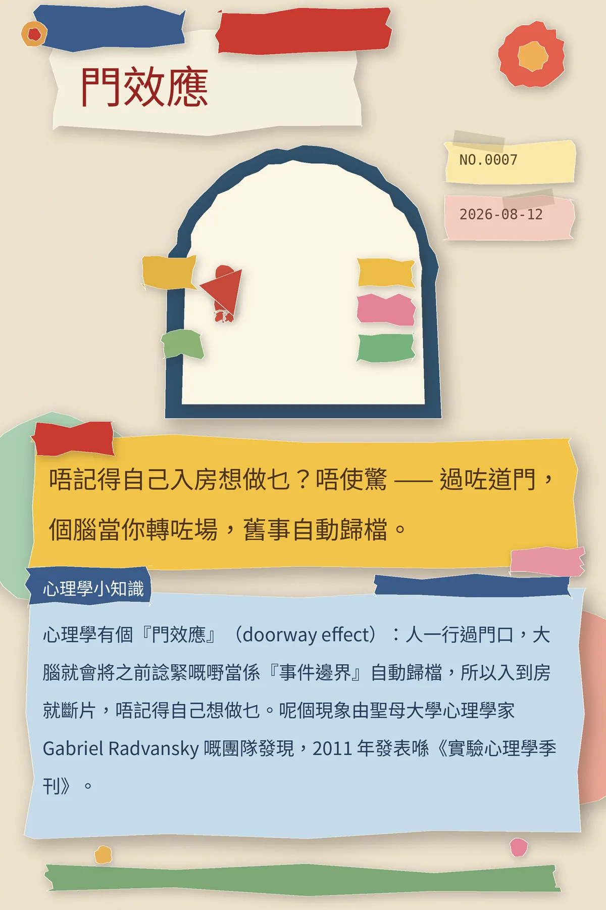

唔記得自己入房想做乜？唔使驚 —— 過咗道門，個腦當你轉咗場，舊事自動歸檔。
心理學有個『門效應』（doorway effect）：人一行過門口，大腦就會將之前諗緊嘅嘢當係『事件邊界』自動歸檔，所以入到房就斷片，唔記得自己想做乜。呢個現象由聖母大學心理學家 Gabriel Radvansky 嘅團隊發現，2011 年發表喺《實驗心理學季刊》。
冷知识由执笔的模型自行查证。逐条断言、来源与所引原句存档在纯文字副本里，未经程序逐字校验，留作事后核实。